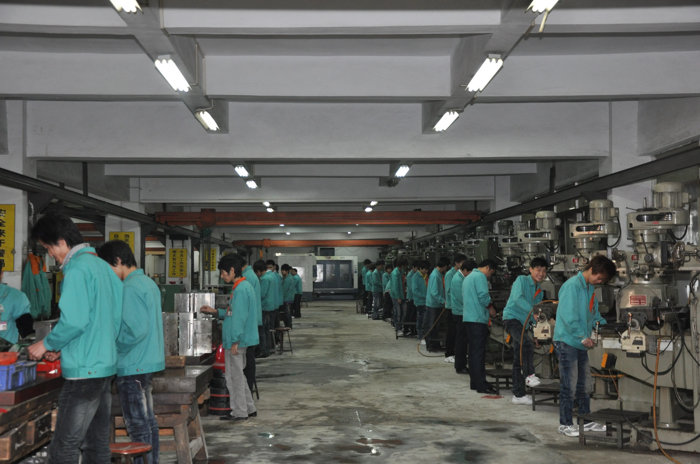
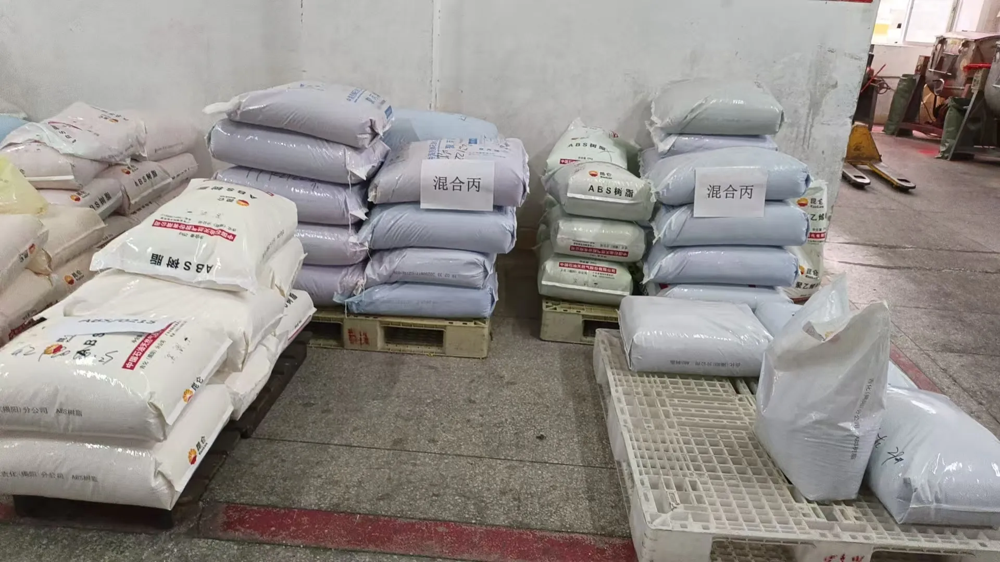

Manufacturing · OEM · ODM
From product brief to export-ready production.
Development coordination, tooling, molding, assembly, inspection, packaging, and shipment preparation through one practical workflow.
Production Workflow
A clear path from idea to shipment.
The exact route depends on the product, but every project is organized around the same decision points and approval gates.
Product brief
Target market, specifications, price, quantity, packaging, and delivery expectations.
Feasibility
Material, process, factory, tooling, MOQ, compliance, and cost review.
Sample approval
Prototype or pre-production sample review before volume production.
Production
Material preparation, molding, decoration, assembly, and packing.
Quality control
Inspection checkpoints against the approved sample and specification.
Export readiness
Final cartons, documentation, consolidation, and shipment coordination.
Core Capabilities
Production stages, made visible.
Your existing production images are used here as representative placeholders until final project-specific photography is selected.

Tooling
Mold and component preparation
Coordinate tooling requirements, product structure, component fit, and the sample approval path before mass production.
- Tooling review
- Prototype coordination
- Pre-production sample

Molding
Plastic component production
Plan material selection, color matching, molding, and component checks around the approved specification.
- Material control
- Color reference
- In-process checks
Assembly
Assembly and line coordination
Track assembly, decoration, functional checks, and packing progress through the production schedule.
- Assembly follow-up
- Function checks
- Line inspection

Packing
Storage and shipment preparation
Prepare finished goods, master cartons, shipping marks, and final inspection access before loading.
- Carton planning
- Shipping marks
- Final inventory check
Materials & Quality
Control starts before the assembly line.
Product quality depends on approved materials, stable production settings, clear workmanship standards, and inspection points that are agreed before shipment.


Compliance Support
Build the requirements into the brief.
Testing and compliance needs vary by product and market. We coordinate the project around the buyer’s applicable requirements and partner-lab process.
Have a product in mind?